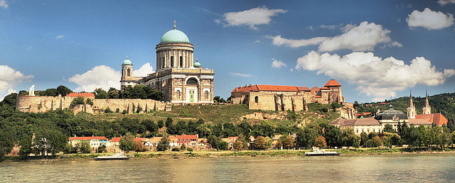

Esztergom kedvelt idegenforgalmi célpont, évente egymillió turista választja úti céljául. A város az esztergomi érsek székvárosaként a római katolikus egyház magyarországi központja. Az esztergomi bazilika Európa egyik legnagyobb bazilikája, és egyúttal az ország legmagasabb épülete. Itt található az egyetlen épen maradt magyar reneszánsz kori épület, a Bakócz-kápolna.
A városnak van a leggazdagabb egyházi kincstára az országban, ami világviszonylatban is kiemelkedő gyűjteményekkel rendelkezik. Az Esztergomi Keresztény Múzeum az ország leggazdagabb egyházi múzeuma, és a világ harmadik leggazdagabb egyházmegyei múzeuma. A városban alakult meg 1881-ben a Magyar Vöröskereszt elődje.
Esztergom továbbá a magyar repülés egyik bölcsője is, 1936-tól az esztergomi repülőgépgyárban dolgozott idősebb Rubik Ernő repülőmérnök. A rendszerváltástól 2012-ig a város volt az Alkotmánybíróság székhelye.
